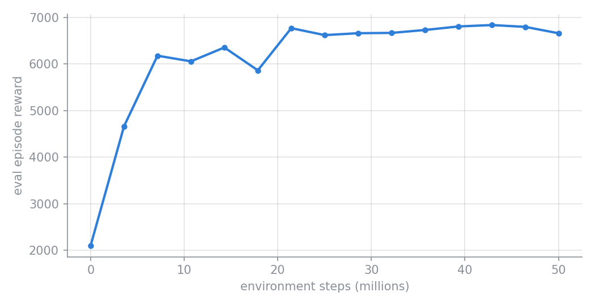

Training a policy¶
example/train.py trains a PPO policy for the Cheetah, checkpoints it as it goes, and
saves a video of the trained policy at the end. This page walks through the script step
by step, then shows what a finished run looks like on disk.
python -m example.train --config example/cheetah.yaml # logs to Weights & Biases
python -m example.train --config example/cheetah.yaml --no_wandb # no W&B
Command-line options¶
| Flag | Default | Meaning |
|---|---|---|
--config |
(required) | Path to the run's YAML config |
--no_wandb |
off | Turn off Weights & Biases logging |
--wandb_entity |
njanwani-gatech |
W&B entity (user or team) to log to |
--wandb_project |
my-awesome-project-2 |
W&B project to log to |
--T |
10.0 |
Seconds of the trained policy to save as a video. 0 skips the video. |
--camera |
track |
Camera to render the video from |
Step by step¶
1. Pick a rendering backend¶
MuJoCo reads MUJOCO_GL when it is first imported, so it is set before anything else.
egl renders on the GPU without a display, which is what you want on a cluster. The
video in step 7 is the only rendering the script does. See
setup_gpu if you want this picked
automatically per machine.
2. Read the config¶
Config loads the YAML file and exposes the values
the library needs as properties: cfg.env_name, cfg.env_params, cfg.ppo_params,
cfg.network_params, cfg.run_dir, and so on. It is the only code that knows the
YAML layout. Every library function takes plain arguments, so you can subclass
Config for a different layout or skip it. See The config file.
3. Build the environment¶
create_environment (in example/create_environment.py) maps cfg.env_name to an
environment class, here Cheetah. for_training=True forces the jnp (JAX/MJX)
backend whatever the config says, because Brax trains thousands of environments in
parallel on the accelerator and needs every step to be traceable by JAX.
4. Create the run directory and save the config¶
run_dir = mm.create_training_directory(cfg.run_dir, overwrite=cfg.is_test)
cfg.save(run_dir / 'config.yaml', make_dir=False)
create_training_directory
creates save_dir/name (here example/results/cheetah/test). It refuses to reuse a
directory that already holds training output, unless overwrite is set. Runs named
test set it, so you can rerun a scratch config freely; any other name protects its
earlier results.
Config.save then writes the config next to
the checkpoints. For runs not named test it also records the current git commit as
git_hash, and asks you to confirm if the working tree has uncommitted changes. That
saved config.yaml is what you later pass to rollout.py to reproduce this run.
5. Start a Weights & Biases run (optional)¶
run = mm.initialize_wandb(
name = str(run_dir).replace('/', ''),
entity = wandb_entity,
project = wandb_project,
config = cfg.cfg.to_dict()
)
initialize_wandb wraps wandb.init
and logs the whole config, nested as in the YAML file. With --no_wandb, run is
None and every later step skips its W&B logging.
6. Train¶
make_inference_fn, params, _ = mm.train(
env = env,
eval_env = env,
run_dir = run_dir,
handle_params = mm.setup_ppo,
ppo_params = cfg.ppo_params,
network_params = cfg.network_params,
run = run,
overwrite = cfg.is_test,
)
train does the heavy lifting:
- Prepares the run directory and records the W&B run id in
wandb_run_id.txt, so a later job can continue the same W&B run. - Builds the trainer by calling
handle_params(ppo_params, network_params, resumed).setup_pporeturns Brax's PPO trainer with yourppo_paramsbound, and a factory for the policy and value networks built fromnetwork_params. To use another algorithm, pass your own handler with the same signature. - Attaches two callbacks that Brax calls after every evaluation (
num_evalstimes over the run):- a progress callback, by default
Progress, which appends the evaluation reward toprogress.csv, logs every scalar metric to W&B, and stops training if the reward becomes NaN; - a checkpoint callback, which writes the policy parameters with
save_modelinto a directory named after the step count (and uploads it as a W&B artifact).
- a progress callback, by default
- Runs Brax PPO, wrapping the environment with MuJoCo Playground's
wrap_for_brax_training, then prints the time spent compiling and the time spent training.
It returns make_inference_fn, the trained params, and Brax's final metrics.
Continuing a run
mm.train(..., resume=True) continues from the newest checkpoint in run_dir
instead of refusing to touch it. num_timesteps is then the run's total budget,
and training covers only the steps still owed. To train longer, raise
num_timesteps in the saved config and resume.
7. Save a video of the trained policy¶
inference_fn = jax.jit(make_inference_fn(params, deterministic=True))
frames, *_ = mm.rollout_policy(
inference_fn = inference_fn,
env = env,
n_steps = int(T / env.dt),
camera = camera,
width = 640,
height = 480
)
video_path = run_dir / 'rollout.mp4'
mm.save_video(frames, env.dt, video_path)
if run is not None:
run.log({'rollout': wandb.Video(str(video_path), format='mp4')})
make_inference_fn(params, deterministic=True) builds a policy that always takes the
mean action rather than sampling. rollout_policy
runs it for T seconds and renders the frames, and
save_video writes them to
run_dir/rollout.mp4 at the control rate. The video is also logged to W&B.
This uses the training environment (jnp backend) rather than building a separate
np one. Rolling out a policy shows the more flexible way to evaluate a
checkpoint after training.
What a finished run looks like¶
The example run in example/results/cheetah/test trained for 50M environment steps
with 128 parallel environments and 15 evaluations:
example/results/cheetah/test/
├── config.yaml # the config this run used (pass it to rollout.py)
├── progress.csv # one row per evaluation: time, step, reward, reward std
├── rollout.mp4 # step 7's video of the final policy
├── wandb_run_id.txt # the W&B run this directory belongs to
├── 000000000000/ # one checkpoint per evaluation, named by env step
├── 000003573760/
├── ...
└── 000050032640/ # newest checkpoint; rollout.py loads this one by default
├── ppo_network_config.json
└── ... # Orbax checkpoint files
Checkpoints land every 3,573,760 steps: Brax rounds the evaluation interval up to a
whole number of training iterations (batch_size × unroll_length × num_minibatches =
2,560 environment steps here), which is also why the last one sits slightly past 50M. Each checkpoint
directory holds everything needed to rebuild the policy, including its
ppo_network_config.json (observation and action sizes, layer sizes, activation).
progress.csv gives the learning curve. Brax evaluates once before training starts,
so the first row is the untrained policy. In this run the gap between the first two
evaluations was about 70 seconds, mostly JAX compiling the training step (train
prints it as time to jit). After that, evaluations came every 31 seconds or so, and
the run took about 8 minutes in all:

And rollout.mp4 shows the final policy:
Full script¶
example/train.py
import os
os.environ["MUJOCO_GL"] = "egl"
import minimal_mjx as mm
from pathlib import Path
from example.create_environment import create_environment
import argparse
import jax
import wandb
def main(
config_path : Path,
use_wandb : bool = True,
wandb_entity : str = 'njanwani-gatech',
wandb_project: str = 'my-awesome-project-2',
T : float = 10.0,
camera : str = 'track'
):
# Read configuration file
cfg = mm.utils.Config(config_path)
# Create environment
env, env_params = create_environment(cfg, for_training=True)
# Create the run directory and save the config next to the checkpoints
# (runs named 'test' may be overwritten and skip recording the git hash)
run_dir = mm.create_training_directory(cfg.run_dir, overwrite=cfg.is_test)
cfg.save(run_dir / 'config.yaml', make_dir=False)
# Initialize Weights and Biases Run object (if you want to use it)
if not use_wandb:
run = None
else:
run = mm.initialize_wandb(
name = str(run_dir).replace('/', ''),
entity = wandb_entity,
project = wandb_project,
config = cfg.cfg.to_dict()
)
# Begin training
make_inference_fn, params, _ = mm.train(
env = env,
eval_env = env,
run_dir = run_dir,
handle_params = mm.setup_ppo,
train_fn_params = cfg.ppo_params,
network_factory_params = cfg.network_params,
run = run,
overwrite = cfg.is_test,
progress_cls = mm.Progress
)
# Save a video of the trained policy
if T > 0:
inference_fn = jax.jit(make_inference_fn(params, deterministic=True))
frames, *_ = mm.rollout_policy(
inference_fn = inference_fn,
env = env,
n_steps = int(T / env.dt),
camera = camera,
width = 640,
height = 480
)
video_path = run_dir / 'rollout.mp4'
mm.save_video(frames, env.dt, video_path)
if run is not None:
run.log({'rollout': wandb.Video(str(video_path), format='mp4')})
if __name__ == '__main__':
parser = argparse.ArgumentParser(description='Train a policy from a config file.')
parser.add_argument('--config', type=Path, required=True, help='Path to the config file')
parser.add_argument('--no_wandb', action='store_true', help='Disable Weights and Biases logging')
parser.add_argument('--wandb_entity', default='njanwani-gatech', help='Weights and Biases entity')
parser.add_argument('--wandb_project', default='my-awesome-project-2', help='Weights and Biases project')
parser.add_argument('--T', type=float, default=10.0,
help='Seconds of the trained policy to save as a video (0 to skip)')
parser.add_argument('--camera', default='track', help='Camera name to render the video from')
args = parser.parse_args()
main(
config_path = args.config,
use_wandb = not args.no_wandb,
wandb_entity = args.wandb_entity,
wandb_project = args.wandb_project,
T = args.T,
camera = args.camera
)